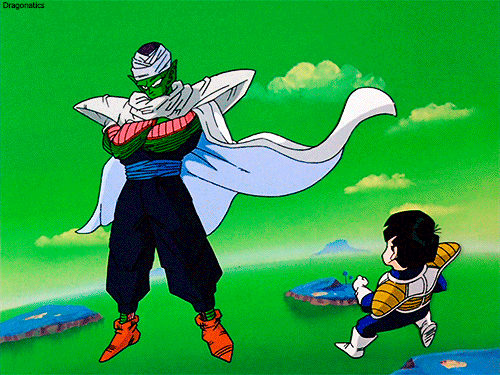
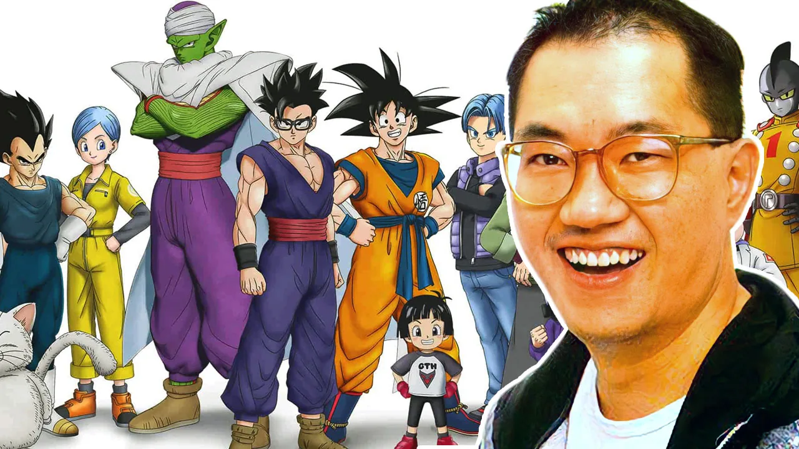
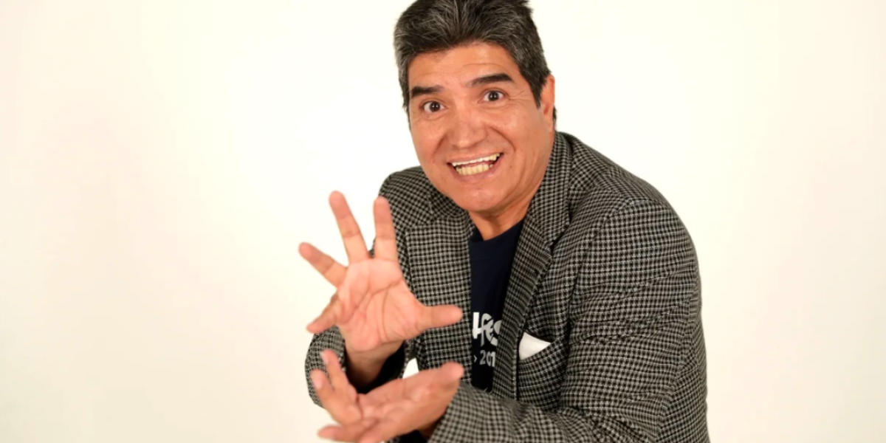
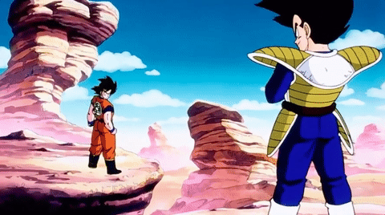
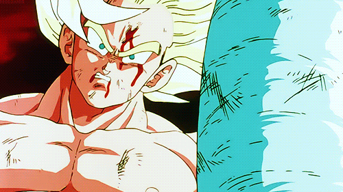
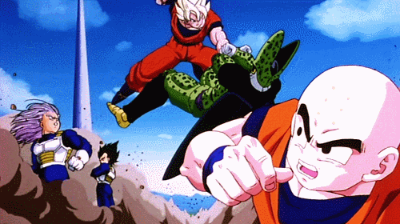
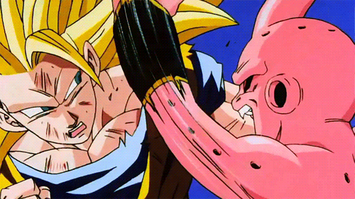
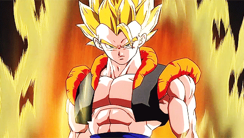

PERSONAJES DRAGON BALL Z:
Goku

El protagonista de la serie, un guerrero Saiyajin con un corazón puro. Su lucha por proteger a la Tierra lo convierte en uno de los héroes más emblemáticos de la historia del anime.
Vegeta

El príncipe de los Saiyajins, quien comienza como antagonista, pero con el tiempo se convierte en uno de los aliados más importantes de Goku.
Gohan

Hijo de Goku, cuyo potencial es inmenso , incluso más que el de su propio padre. Juega un papel clave en la derrota de Cell.
Piccolo
Un guerrero Namekiano que pasa de ser enemigo de Goku a uno de sus aliados más cercanos.
Trunks:

Hijo de Vegeta, quien también juega un papel crucial en la saga de los androides y la lucha contra Majin Buu.
N*EPISODIOS DE DRAGON BALL Z:

"Dragon Ball Z" tiene un total de 291 episodios. La serie original se emitió en Japón entre 1989 y 1996 y cubre desde la llegada de los Saiyajins hasta la saga de Majin Buu. Está dividida en varias sagas, incluyendo la Saga de los Saiyajins, la Saga de Freezer, la Saga de Cell, y la Saga de Majin Buu. Además, existen las versiones remasterizadas y los "Dragon Ball Z Kai", que reducen la cantidad de episodios al eliminar rellenos, y en ese caso la serie tiene 167 episodios.
CREADOR DE DRAGON BALL Z:
La serie Dragon Ball Super fue creada por Akira Toriyama, el mismo mangaka japonés que dio vida a la franquicia Dragon Ball original. Aunque Dragon Ball Super es una continuación de la historia de Dragon Ball Z, Toriyama tuvo un papel esencial como creador del concepto y en la supervisión de la trama. El anime fue producido por Toei Animation, y comenzó su emisión en julio de 2015. Toriyama, además de ser el creador, también participó activamente en el desarrollo del guion y en el diseño de personajes, similar a su implicación en las series anteriores de Dragon Ball. Dragon Ball Super se sitúa después de Dragon Ball Z y presenta nuevas sagas, como la del Torneo de los Universos y la Saga de Goku Black. Toriyama volvió a aportar su estilo único para desarrollar una historia que continuara las aventuras de Goku y sus amigos en un universo aún más amplio que el de las sagas anteriores. Toriyama también está detrás del diseño de la mayoría de los nuevos personajes y transformaciones que aparecen en Super, y su creatividad ha sido fundamental para mantener el legado de la serie en el anime moderno.
INTRO: OPENING DRAGON BALL Z
CRADOR DEL OPENING:
La intro de Dragon Ball Z en castellano, conocida como "¡Dragon Ball Z!" es una de las canciones más emblemáticas del anime. En cuanto a su creación y cantante: Creador de la canción: La letra fue escrita por el compositor español Ramón "Chispes" Hernández y la música fue compuesta por el músico Joan Vázquez. Cantante en castellano: La interpretación de la versión en español latino de esta icónica introducción fue realizada por José Luis Navas, quien prestó su voz para el tema que se hizo muy popular en los países hispanohablantes durante los años 90. Este tema de apertura es una de las canciones más recordadas de Dragon Ball Z, siendo interpretada en varios países y grabada para varias versiones de la serie. Su energía y letra fueron un sello distintivo que hizo que muchos fans se identificaran con la serie.

SAGAS Y VILLANOS DE DBZ:
1.Saga de los Saiyajin:
La saga comienza con la llegada de Raditz, el hermano de Goku, quien revela que Goku es un Saiyajin, una raza guerrera. Goku y Piccolo se unen para enfrentarse a Raditz, pero tras su derrota, otros Saiyajins, como Vegeta y Nappa, llegan a la Tierra con el objetivo de destruirla.
2.Saga de Freezer:
Esta saga tiene lugar en el planeta Namek, donde Goku y sus amigos luchan contra el tirano Freezer, quien busca las Esferas del Dragón para obtener la inmortalidad.
3.Saga de los Androides y Cell:
Después de la batalla contra Freezer, Goku y sus amigos enfrentan a los androides creados por el Dr. Gero, un científico de la Red Ribbon. Estos androides causan estragos en la Tierra, pero lo peor está por venir: un androide llamado Cell aparece, y es capaz de absorber a los androides para alcanzar su forma más poderosa.
4.Saga de Majin Buu:
La última saga de Dragon Ball Z involucra a Majin Buu, un antiguo demonio cuyo poder amenaza con destruir todo a su paso. A medida que Buu pasa por varias formas, desde una forma tierna hasta una extremadamente peligrosa, los héroes deben unirse para detenerlo.
EXTRA: El Renacer De La Fusion (Transformado)
Esta batalla es crucial, ya que Goku, después de haber entrenado y crecido, enfrenta a un Piccolo aún más poderoso, quien había transformado en una forma más demoníaca para aumentar su fuerza.